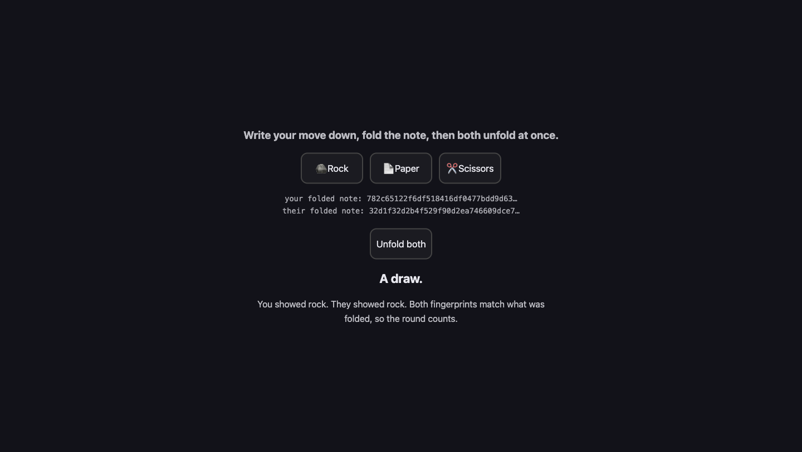

A22: No Peeking
Two players, no referee. So how do you stop someone waiting to see your move before choosing theirs? You both write it down, fold the note, and only then unfold.
This step is optional, and the game we built does not do it.
Our game sends your move straight across. That means whoever's move arrives first has, in a sense, shown their hand — and somebody who opened the code and edited it could answer it. We decided that was fine: it is a game for a few friends, and cheating it takes more effort than winning it.
This step is here because the problem is real and the solution is beautiful, and because you will meet it again the moment you build anything where people have a reason to lie. Skip it and nothing later breaks. Come back to it when you are curious.
Needs: A20. Gives you: a round nobody can win by peeking, and an idea used by real voting systems and lotteries.
The whole game, and today's piece
keys, touches"] --> D["Decide
where everything is"] --> R["Draw
the screen"] end R -. "and again" .-> N S["Remember
your game"] --> D O["Other people"] --> D F["The fight"] --> D W["The world
walls, map"] --> R A["Sound"] --> R classDef now fill:#8a5a00,stroke:#ffc46b,color:#fff,stroke-width:3px class F,O now
The real game sends these messages over the wire, using the connection from A19. Here both players are on one page so you can see the whole thing at once — including the cheating.
The problem, at a table first
You and a friend play rock, paper, scissors across a table. If your friend can see your hand before they move, they win every round. So you both put a fist out and open on three.
Now put your friend on another computer. Your move has to travel to them as a message. Whoever sends first has shown their hand, and the other one can simply pick the move that beats it. Nobody can prove it happened. There is no server in this game to hold both moves and open them together — that is the whole point of the design, and it is why this problem is yours to solve.
The folded-note trick works: write your move down, fold it, put it on the table, and only unfold when both notes are down. What you need is a way to fold a note made of text.
Cutting it into blocks
- Hide — turn your move into something that proves nothing and reveals nothing
- Show both at once — nobody unfolds until both folded notes are on the table
- Check — make sure the move someone showed is really the one they folded
Why bother splitting it? Because these three fail in completely different ways, and if they were one lump you could not tell which one failed. Hiding badly means the other player can read your move. Showing too early means they never had to guess. Not checking means they can fold one move and show another. The demo has a button for that last one, so you can watch the check do its job.
This part is confusing for everyone the first time. Read it twice. It is the most beautiful idea in the whole track.
Block 1: Hide
A fingerprint of some text is a fixed string of characters worked out from it. The same text always gives the same fingerprint, and there is no way to work backwards from the fingerprint to the text. The browser has this built in:
async function fingerprint(text) {
const bytes = new TextEncoder().encode(text);
const digest = await crypto.subtle.digest('SHA-256', bytes);
return [...new Uint8Array(digest)].map((b) => b.toString(16).padStart(2, '0')).join('');
}
SHA-256 is the name of the recipe. It gives back 32 numbers; the last line turns each into two characters, so you always end up with the same 64 characters no matter how long the text was.
async and await are there because this takes a moment and the browser refuses to freeze the page while it happens. Anything that calls fingerprint has to await it too.
Now the important part. Three moves is not many. If you sent the fingerprint of just 'rock', a cheat could fingerprint 'rock', 'paper' and 'scissors' themselves — three tries, ten seconds — and see which one matches yours. The fold would be transparent.
So mix in a secret nobody can guess:
function randomSecret() {
const bytes = crypto.getRandomValues(new Uint8Array(8));
return [...bytes].map((b) => b.toString(16).padStart(2, '0')).join('');
}
async function fold(move) {
const secret = randomSecret();
return { move, secret, folded: await fingerprint(move + ':' + secret) };
}
crypto.getRandomValues fills the list with proper unguessable randomness. Now there are not three things to try — there are more than a million million million. Trying them all is not a plan.
You send folded. You keep move and secret to yourself, for now.
This needs a secure context.
crypto.subtleis only handed to pages the browser considers safe: anhttpsaddress, orhttp://localhost. Live Server gives youlocalhost, so it works — that is one of the reasons A09 had you install it. Do not assume opening the file some other way will behave the same; serve it and you never have to wonder.
Block 2: Show both at once
let you = null;
let them = null;
async function reveal() {
const yourShown = { move: you.move, secret: you.secret };
const theirShown = { move: them.move, secret: them.secret };
...
}
The rule is one sentence: nobody sends their move until both fingerprints have arrived. In the demo that is one click, because both players are on this page. In the real game each side sends its fingerprint, waits for the other one, and only then sends the move and the secret.
By that moment it is too late to change your mind. Your fingerprint is already in their hands, and any other move you now claim will not match it.
Block 3: Check
async function check(shown, folded) {
return (await fingerprint(shown.move + ':' + shown.secret)) === folded;
}
That is the whole thing. Take the move and secret they showed you, fingerprint them again exactly the way they should have, and compare with the fingerprint they sent before. Same, honest. Different, they swapped their move after seeing yours.
Notice this is a pure block, like compare in A20: values in, true or false out, nothing touched. Both players run it and both get the same answer, which is exactly what you need when there is nobody to appeal to.
This is the block you cannot see working. When everybody is honest, check returns true every time and nothing happens — which is exactly what a piece of security code looks like when it is doing its job. To watch it earn its place you have to lie to it on purpose, which is what "Your turn" at the bottom of this step asks you to do.
Why we did it this way
The forcing constraint: there is no server. In most games a company's computer holds both moves and opens them at the same time, and you trust the company. Your game has no company and no referee. The only thing two computers share is messages, and either one could lie about anything.
So instead of trusting, you make lying not work. A fingerprint you cannot reverse means sending it early gives nothing away; a fingerprint you cannot fake means changing your move afterwards is caught, every time, by arithmetic. Grown-up programmers call this commit–reveal, and it is used far outside games — in auctions and in voting.
What we could have done instead
| Instead of this | What it would cost |
|---|---|
| Whoever sends first, sends first | Free, and completely broken. The second player wins every round by reading the first move and answering it |
| One player's computer decides and tells the other | Now one player is the referee in their own match. You cannot even tell whether they cheated |
| Fingerprint the move with no secret | Only three possible moves. Anyone can fingerprint all three and read yours in seconds |
| A tiny server holding both moves | It works, and it is what most games do. But it costs money, it needs looking after, and the game stops when it does. Yours keeps running with nothing in the middle |
The prompt
In plain JavaScript with no libraries, I have a fight where each side picks
rock, paper or scissors. Add commit-reveal with crypto.subtle SHA-256: a fold()
that hashes the move with a random secret, a reveal step that only runs once
both hashes exist, and a pure check(shown, folded) returning true or false.
Then add a button that reveals a move that was never folded, so I can see the
check fail. Keep check() free of DOM code. Warn me about anything that needs
a secure context.
Check the output for: does the "cheat" button always reveal a move that is genuinely different from the folded one? Ours did not at first — it revealed the move that beats yours, which is sometimes the move the opponent had already folded, so the check passed and nothing was caught about one press in three. Also check that check refingerprints the move and the secret in the same order they were joined; get the order wrong and every honest round is reported as cheating.
See it work

Open the page with Live Server and:
- Press scissors. Two long fingerprints appear. Neither of them tells you anything about either move — that is the point.
- Press Unfold both. Both moves appear and the round counts. We read the checking result back and got
{ youHonest: true, theyHonest: true }, with the verdict "A draw." and both fingerprints matching. - Open the console and type
lastCheck. You get both moves, both secrets, andyouHonest: true, theyHonest: true— the proof that the check ran and passed, rather than being skipped. - Press the same move twice and look at the two fingerprints. They are different every time, because the secret is new every time. A cheat cannot even tell whether you played the same move twice.
Put it in the game
Only if you want it. Our game does not do this, so this is a change you are choosing to make rather than one the course needs.
In the fight from A20, send folded instead of the move. Wait for theirs. Then send { move, secret }, and run check on what comes back before you let compare decide anything. If the check says false, no winner — the round is thrown away and nobody scores.
Be warned that it costs more than it looks. You now have two messages per round instead of one, and a new way for a round to get stuck: somebody folds and then never unfolds. That is why the "Your turn" below asks for a clock. Weighing that against a cheat nobody is likely to attempt is exactly the kind of judgement this whole course is about — and deciding not to build something, for a reason you can say out loud, is a real answer.
Key Takeaways
- Fold your move before anyone shows theirs: send a fingerprint first, the move second
- A fingerprint always comes out the same for the same text, and cannot be read backwards
- With only three possible moves, a fingerprint with no secret mixed in can be guessed in three tries
- You do not need a referee to stop cheating — you need a check that catches it, and arithmetic does not take sides
crypto.subtleneeds a secure context, which is whathttp://localhostfrom Live Server gives you
Your turn
Lie to it on purpose. Play a round, then in the console change the move that gets shown so it is not the one that was folded, and check it again:
const faked = { move: 'rock', secret: lastCheck.theirShown.secret };
await check(faked, lastCheck.theirShown === lastCheck.yourShown ? null : them.folded);
You should get false. That is the whole block earning its place, and until you have seen it return false you have only seen it agree with you.
Then, if you want a harder one: add a clock. If someone does not show their move within ten seconds of both fingerprints being down, throw the round away. Work out why that is needed at all — what does a player gain by folding a move and then never showing it?